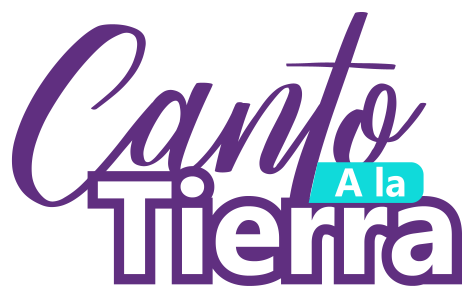
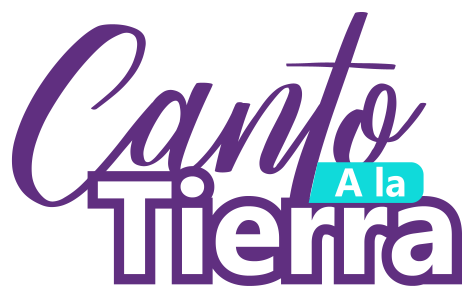

Cada año en San Juan de Pasto el 3 de enero se dan cita cientos, hasta miles de personas, para vivir el Carnaval de Negros y Blancos, expresado en una de sus máximas presencias, la magia de “El Canto a La Tierra”. A partir de propuestas coreográficas y musicales de gran formato, Colectivos Coreográficos se desplazan por la Senda del Carnaval (calles de la ciudad) para compartir con los festejantes las novedosas y auténticas creaciones en danza, música y color.
 

En esta sección encontrarás información sobre las propuestas artísticas para los momentos de inscripción, acreditación y de audición artística. Que además de sistematizar el proceso aportará a concentrar la información de la trayectoria de los colectivos coreográficos.


Gestores, artistas y creadores vinculados con las agrupaciones y organizaciones culturales interesadas en participar en el Canto a la Tierra a través de los colectivos coreográficos.